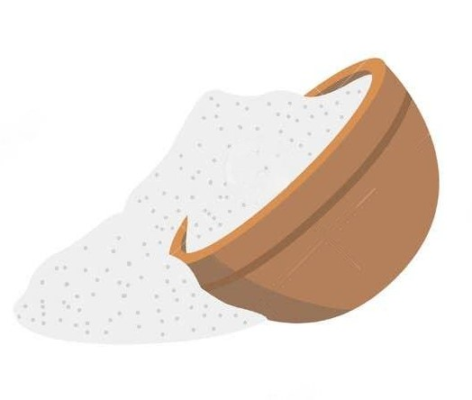 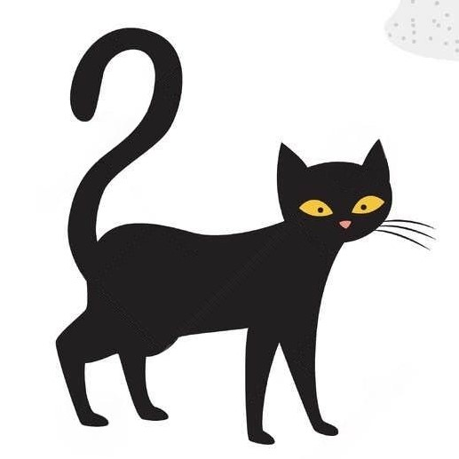 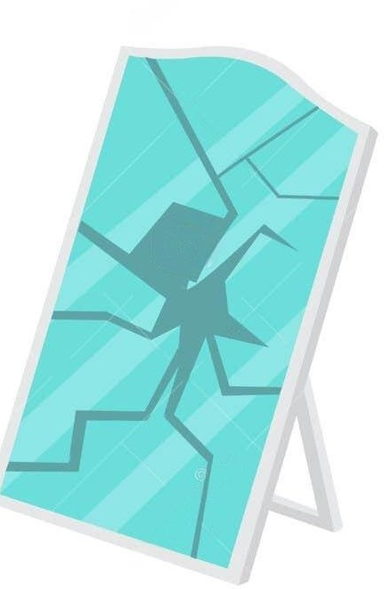 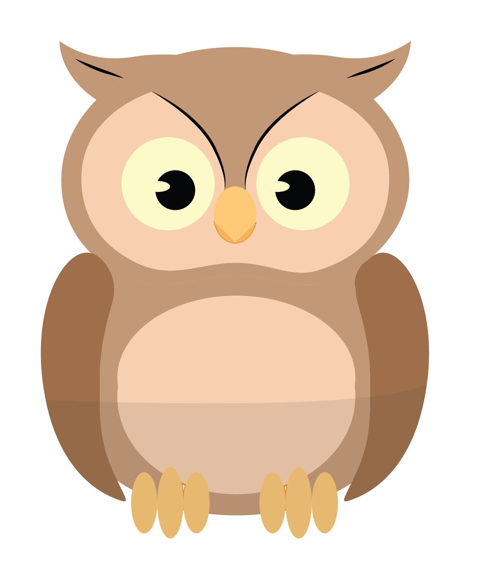
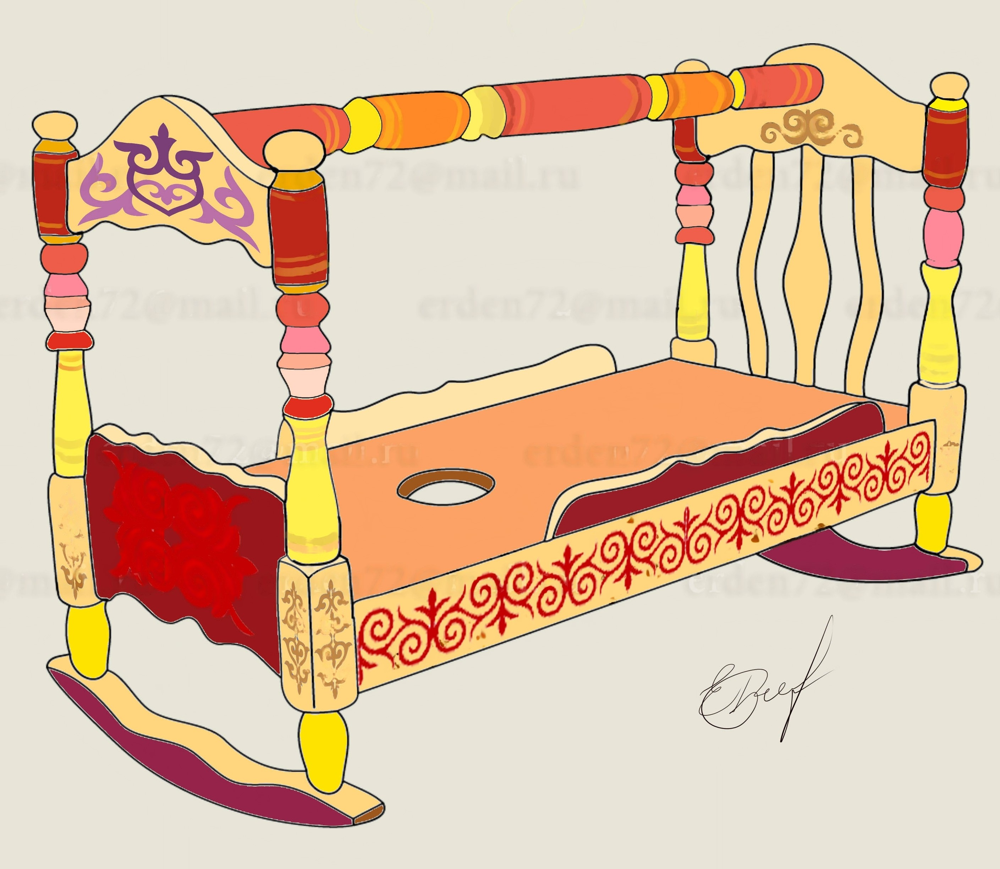
English and Kazakh Superstitions
Hearing an owl’s hoot during the day or seeing one is indication of death or fatality
A visit from a night owl to the house is considered unlucky, but owl considered to be sacred, Kazakh attach its feathers to headwear to protect themselves
Next Flashcard
 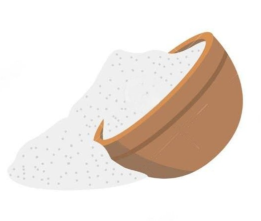
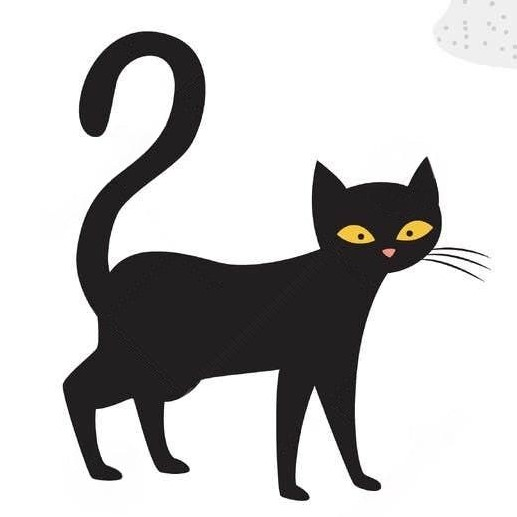
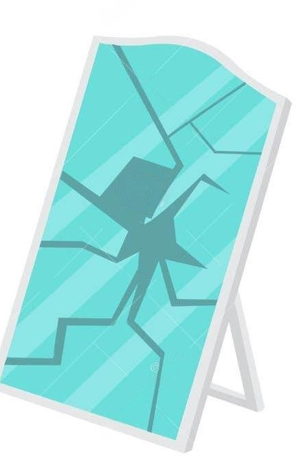
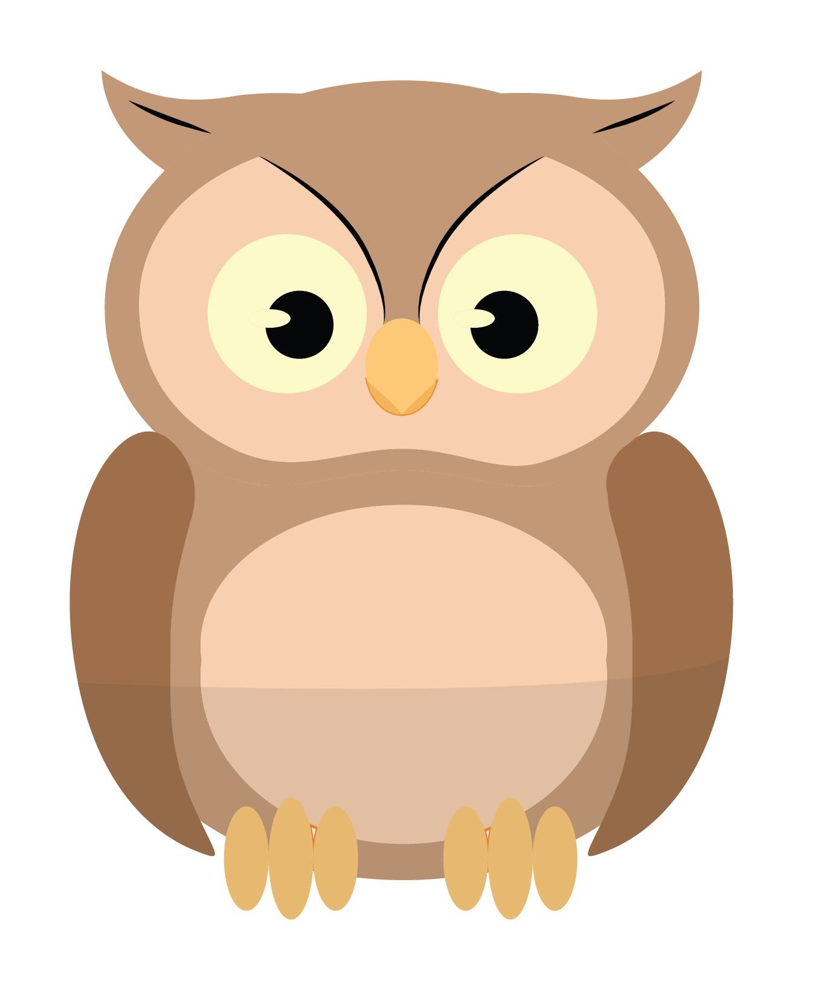
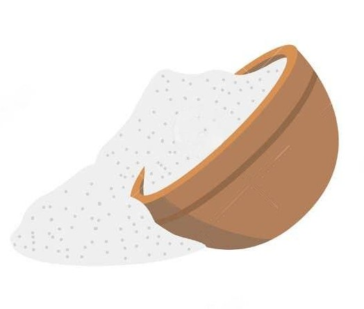
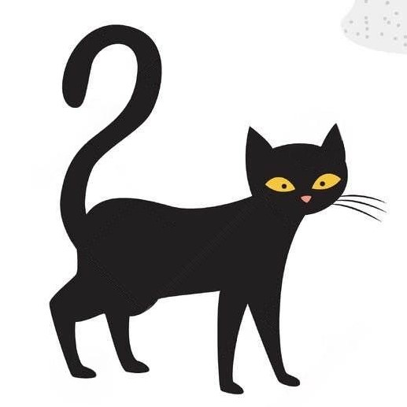
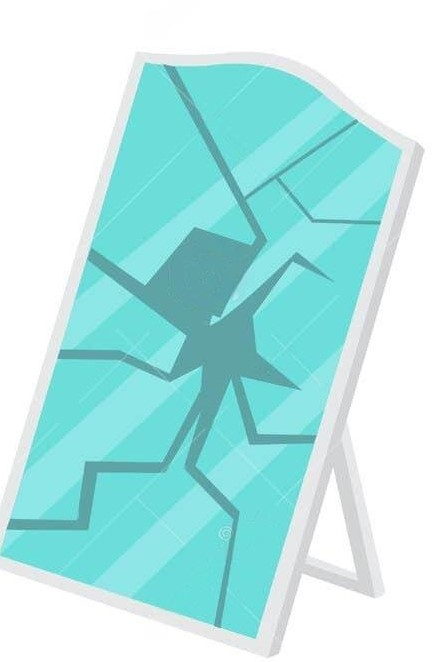
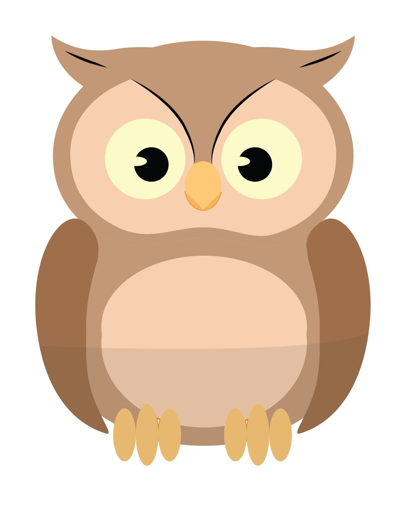
 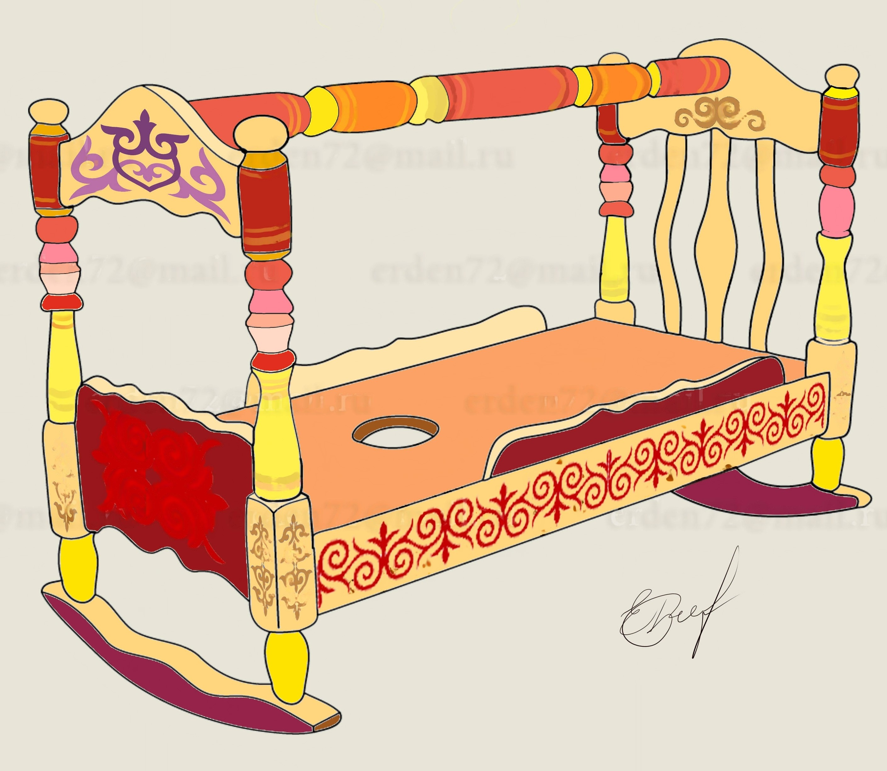
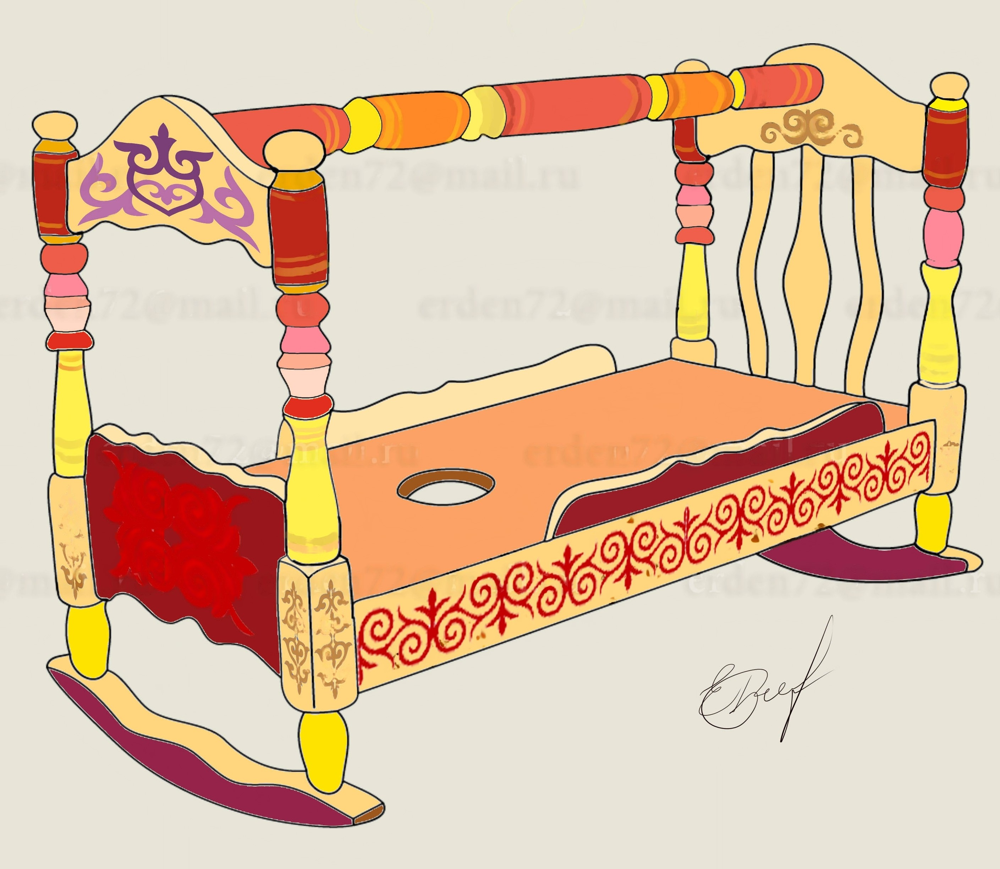